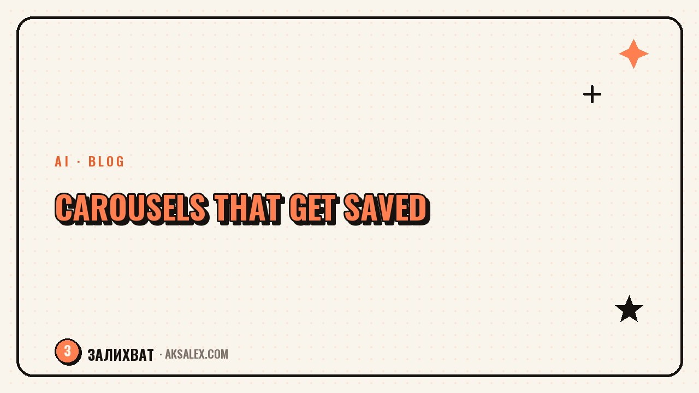

How to Make a Social Media Carousel With AI

Why carousels get saved so well
A carousel answers the viewer's question in full: they see the structure, swipe through step by step, and end up with a ready-made mini-guide. Content like that makes people want to save it to come back later, and saves are one of the strongest signals for the algorithm.
A carousel also holds attention longer: swiping to the end takes time, and the algorithm sees a long interaction with the post. That's why the format is so loved in niches where there's something to teach - from recipes to marketing.
A carousel works like a mini-manual in your pocket. People save it not for its looks, but because they want to come back to it.
The structure of a strong carousel
A carousel rests on structure as much as on text. The classic framework is simple, and almost any topic fits into it.
A four-part framework
- Cover: a catchy, promise-driven headline that gets people swiping.
- Problem: a short slide about the pain point you're solving.
- Body: 3-6 slides with steps, mistakes, or points - one idea per slide.
- Ending: a takeaway and a gentle prompt to save or discuss in the comments.
The key rule is one idea per slide. Don't try to cram in a paragraph: a slide is read in seconds. A short headline, one or two sentences of explanation - and move on. A slide overloaded with text is where people stop swiping.
How to write carousel text with AI
A neural network is great at breaking a topic down into slides. Give it the topic and the audience, and ask it to lay everything out by the structure cover-problem-steps-ending, briefly and one idea per slide. In a minute you'll have a ready framework for the text.
You're a content editor for social media. Carousel topic: [topic]. Audience: [who they are, what their pain is]. Make a carousel of 7 slides: a catchy cover, a problem slide, 4 step slides with one idea each, and an ending with a takeaway and a prompt to save. Keep it short and conversational.
From there, refine it: ask it to shorten long slides, strengthen the cover, add specifics. Text from a neural network is a draft that you bring to life with your voice and examples from your own experience.
Carousel types by goal
The format is one, but the goals differ. Pick the type that matches what you want from the post.
| Carousel type | Goal | Example topic |
|---|---|---|
| Step-by-step guide | Teach, earn saves | "How to make a reel in 5 steps" |
| List of mistakes | Show expertise | "5 beginner mistakes in blogging" |
| Roundup | Deliver value in a batch | "7 apps for video editing" |
| Story with a takeaway | Engage through emotion | "How I grew my blog from scratch" |
| Before and after | Sell the result | "A profile before and after a rebrand" |
Step-by-step guides and lists of mistakes get saved the most - they show concrete value. Stories and before-and-afters work for engagement and trust. Mix up the types so your blog doesn't feel monotonous.
Design and common mistakes
Design should help people read, not decorate for decoration's sake. Keep a consistent style across all slides: one font, one palette, large readable text. Make the cover the boldest - it decides whether anyone starts swiping at all.
- You overloaded a slide with text - people don't finish reading it or swipe further.
- A weak cover - the carousel doesn't get opened, no matter how useful it is inside.
- Inconsistent slide styles - it looks sloppy and lowers trust.
- No final slide with a prompt - you lose saves and comments.
- Tiny font - half your audience swipes on a phone and can't read it.
Design is easiest to do from a single template: build it once and change only the text. That way every new carousel comes together in minutes and keeps your blog's recognizable look.
Frequently Asked Questions
How many slides should a carousel have?
Six to nine slides is comfortable: a cover, a problem, 3-6 body slides, and an ending. Fewer and the topic is covered superficially, more and the carousel rarely gets swiped to the end.
Can I write carousel text with a neural network?
Yes, a neural network is good at breaking a topic down into slides. But its text is a draft: shorten the long slides, strengthen the cover, and add your own examples so the carousel sounds alive.
Why does no one swipe past the cover of my carousel?
Most often it's a weak cover or slides overloaded with text. Make the cover headline a catchy promise, and leave one idea per slide in a large, readable font.
Which carousel type earns more saves?
Step-by-step guides and lists of mistakes - they show concrete value people want to return to. Stories and the before-and-after format work better for engagement and trust.
Do I need a designer to lay out a carousel?
No. Build a single template with one font and one palette, and change only the text. What matters is readability and a consistent slide style, not complex design.
Enjoyed this one? Here's what to read next. Realistic ways to monetize a small blog and where the first income actually comes from.
Read the article →not by hand